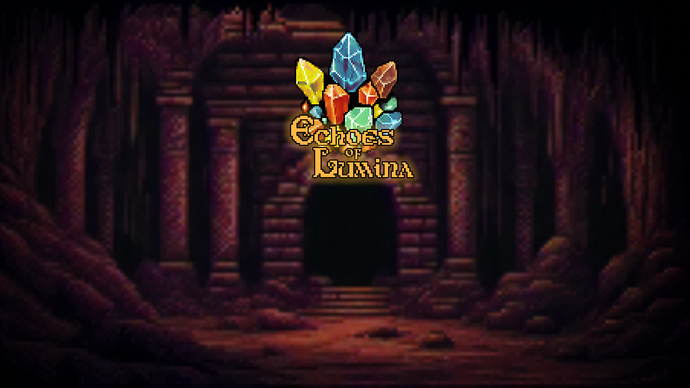

Echoes of Lumina
This project was developed by 3 people for a class under a Master's Degree in Design and Development of Videogames. The main goal of the game is to find and obtain the magic stone and escape.
Play on itch.io ↗